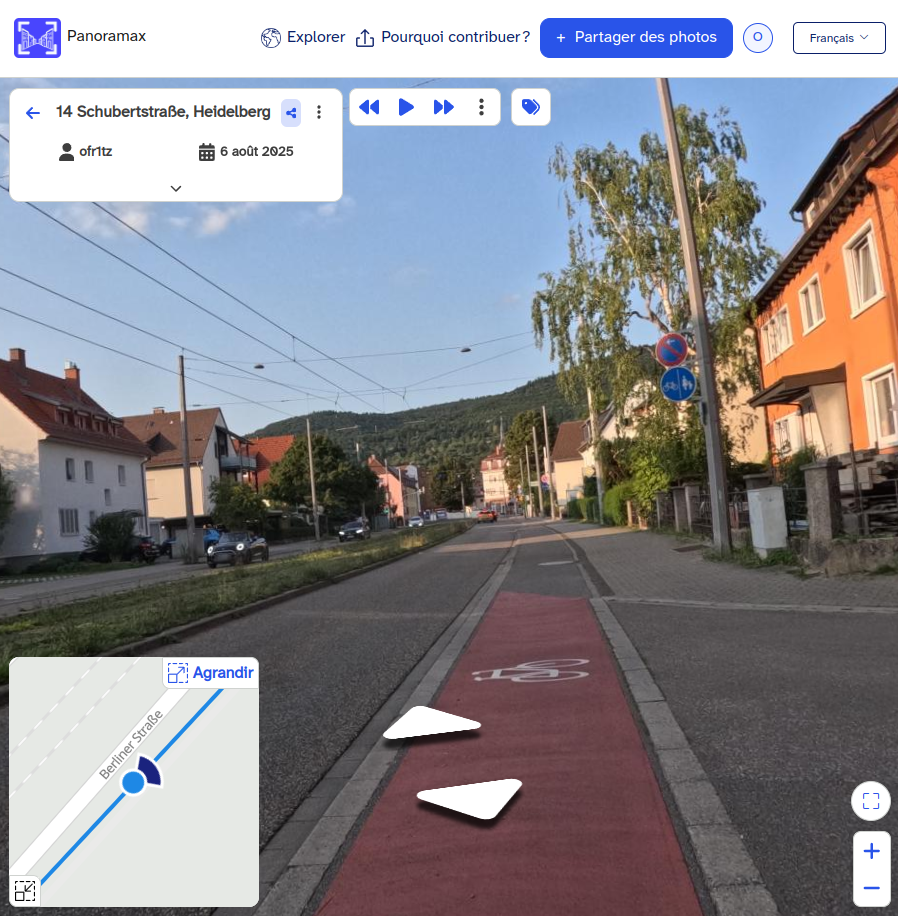
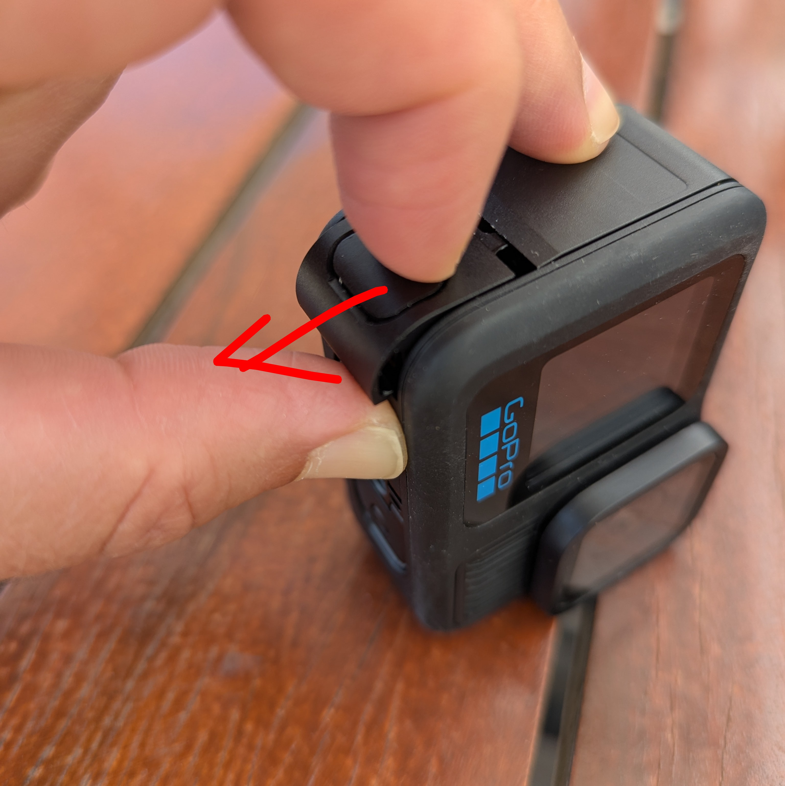
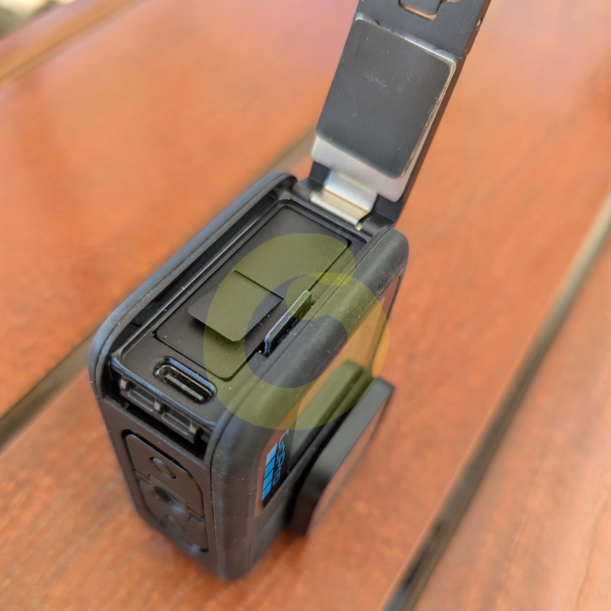
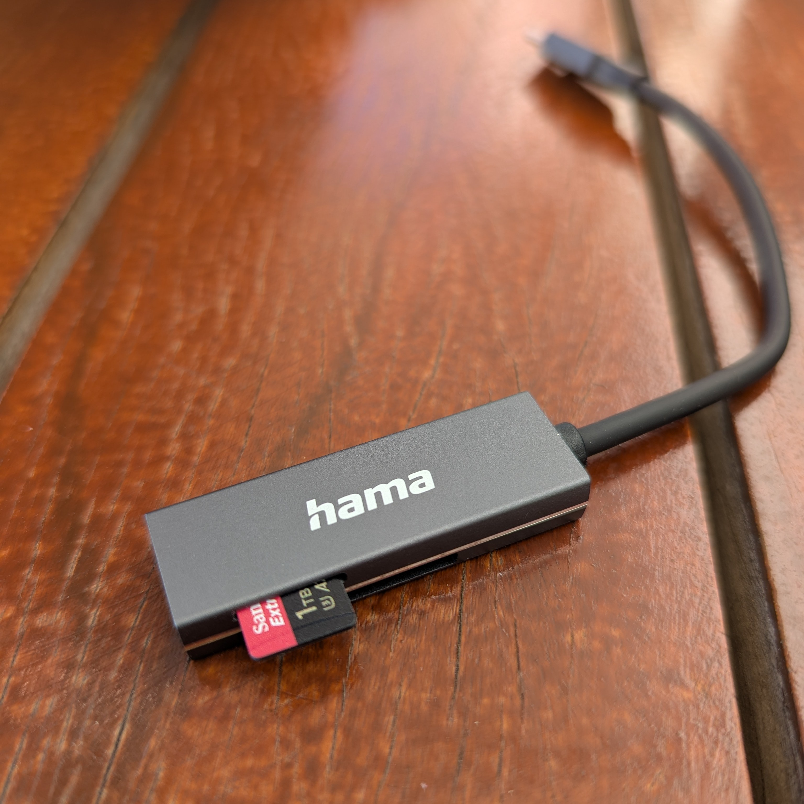
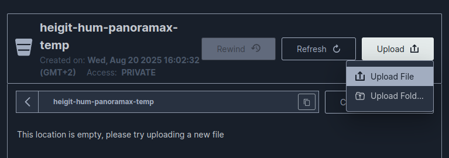
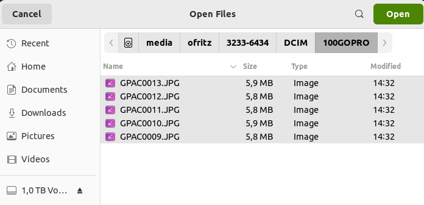
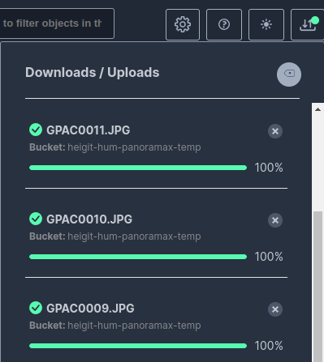

Téléversement et gestion des images : Projet AILAS#
Cette documentation fournit des instructions sur la manière de téléverser et de gérer les images au niveau de la rue qui sont capturées dans le cadre du projet AILAS.
Contexte : Panoramax#
{kind=link}

Capture d’écran d’une image de rue sur Panoramax#
Toutes les images capturées dans le cadre du projet AILAS doivent être téléversées vers une instance privée de la plateforme d’imagerie au niveau de la rue Panoramax. Cela garantit que les images soient facilement accessibles aux parties prenantes concernées pour une utilisation ultérieure dans le projet (annotation de données d’entraînement, modélisation), tout en étant protégées contre l’accès par des utilisateurs non autorisés.
Qu’est-ce que Panoramax ?#
Panoramax est une plateforme ouverte et fédérée pour le partage et la visualisation d’images au niveau de la rue. Comme Google Street View et Mapillary, il permet aux utilisateurs d’explorer des lieux à travers des photos prises le long des rues et des chemins. Mais contrairement aux plateformes commerciales, Panoramax repose sur un écosystème décentralisé et ouvert : les images sont hébergées sur des serveurs indépendants (gérés par des institutions, des collectivités ou des communautés) plutôt que par une seule entreprise, et l’accès est régi par des standards ouverts. L’ensemble de la pile logicielle Panoramax est open source.
Cela signifie que la propriété des données reste entre les mains des contributeurs et des institutions hébergeantes, et que les images peuvent être plus facilement intégrées dans des projets locaux, des travaux de recherche ou des services publics. Panoramax met l’accent sur l’ouverture, la transparence et la souveraineté des données au niveau de la rue.
Fonctionnalités#
🌍 Fonctionnalités principales#
Visualiseur d’images au niveau de la rue – explorer des images panoramiques ou directionnelles le long des routes, chemins et lieux.
Hébergement ouvert et fédéré – les images sont stockées sur des serveurs indépendants opérés par différentes organisations (collectivités, centres de recherche, ONG, etc.).
Standards ouverts (STAC, OGC) – assurent l’interopérabilité avec les plateformes de cartographie, outils SIG et portails de données.
Contributions de sources multiples – les images peuvent provenir d’institutions, de projets communautaires ou d’individus.
Intégration dans les flux de cartographie – les images peuvent être reliées à OpenStreetMap ou à d’autres jeux de données géospatiales.
🔍 Vie privée & traitement#
Floutage automatique des visages et plaques d’immatriculation – anonymisation intégrée avant la publication des images.
Détection d’objets – des modèles d’IA peuvent détecter des éléments pertinents (par ex. panneaux de signalisation) dans les images.
Modèles de détection personnalisés – les opérateurs peuvent exécuter leurs propres pipelines de détection pour des cas d’usage spécifiques.
Enrichissement des métadonnées – les objets détectés peuvent être stockés comme données liées aux images, ce qui rend les images consultables et analysables.
⚙️ Plateforme & écosystème#
Accès par API – les développeurs peuvent interroger et utiliser les images de manière programmatique.
Visualiseur web – un visualiseur léger et intégrable dans des portails publics ou des sites de projets.
Communautaire – une pile logicielle open source, garantissant transparence et extensibilité.
Propriété des données à long terme – les institutions gardent le contrôle sur l’endroit et la manière dont leurs images sont stockées et partagées.
Confidentialité et sécurité des données#
Panoramax empêche l’identification des personnes présentes dans les images en floutant automatiquement les visages et les plaques d’immatriculation. Ce processus intervient automatiquement au moment du téléversement, avant que les images ne soient publiées. Les utilisateurs peuvent signaler tout autre problème lié à une image via la plateforme. Dans ce cas, l’image est masquée du public jusqu’à intervention du propriétaire de l’image.
Alors qu’une des principales fonctionnalités de Panoramax est son métacatalogue global public qui permet de retrouver les images de toutes les instances fédérées, nous avons délibérément choisi de ne pas rejoindre la fédération avec l’instance Panoramax du projet AILAS. Cela signifie que les images téléversées sur notre instance ne peuvent pas être consultées via l’API globale.
L’API de l’instance Panoramax du projet AILAS fonctionne sur un serveur accessible uniquement depuis notre propre réseau. Les images et leurs dérivés sont stockés dans un bucket privé MinIO. Le site web et l’API donnant accès aux images et aux données sont actuellement hébergés sur un réseau fermé.
Téléversement des images#
🚧 Le processus décrit ici est une solution temporaire et va changer. 🚧
1. Retirez la carte SD de la caméra.#
{kind=link}

Faites coulisser le couvercle#
{kind=link}

Poussez délicatement la carte SD pour la retirer.#
2. Insérez la carte dans le lecteur et connectez-le à l’ordinateur.#
{kind=link}

Insérez la carte dans le lecteur#
Avec la carte SD insérée, connectez le lecteur de cartes à un ordinateur.
3. Connectez-vous au bucket de téléversement#

Connectez-vous au bucket de téléversement#
Ouvrez le bucket de téléversement dans votre navigateur et connectez-vous avec les identifiants qui vous ont été fournis.
4. Téléversez les images#
Choisissez le dossier de téléversement correct. Le nom du dossier doit correspondre à l’étiquette de votre caméra. Cliquez sur le dossier pour l’ouvrir.

Ouvrez le bon dossier parmi ceux disponibles pour le téléversement.#

Le nom du dossier doit correspondre à l’étiquette de votre caméra.#
Cliquez sur le bouton de téléversement en haut à droite et sélectionnez « Upload file ».
{kind=link}

Cliquez sur le bouton de téléversement et sélectionnez « Upload file »#
L’explorateur de fichiers s’ouvrira. Sélectionnez et ouvrez toutes les images de la carte SD dans le dossier
/DCIM/100GOPRO.
Gestion de plusieurs dossiers d’images
Si vous avez capturé plus de mille images, celles-ci sont enregistrées dans plusieurs sous-dossiers de DCIM appelés 100GOPRO, 101GOPRO, etc. Répétez les étapes 2 à 4 de cette section pour tous les sous-dossiers.
{kind=link}

Sélectionnez les fichiers d’images#
Attendez que le statut de téléversement de tous les fichiers image atteigne 100 %. Faites défiler le menu de statut de téléversement pour vérifier.
{kind=link}

Attendez que le téléversement de tous les fichiers soit terminé#
5. Supprimez les images#
Une fois que vous avez téléversé avec succès les images, supprimez-les de la carte SD.
6. Réinsérez la carte SD dans la caméra#
Retirez en toute sécurité le lecteur de cartes SD de votre ordinateur, puis réinsérez la carte dans la caméra.
Explorations des images sur Panoramax#
🚧 Information à venir. 🚧